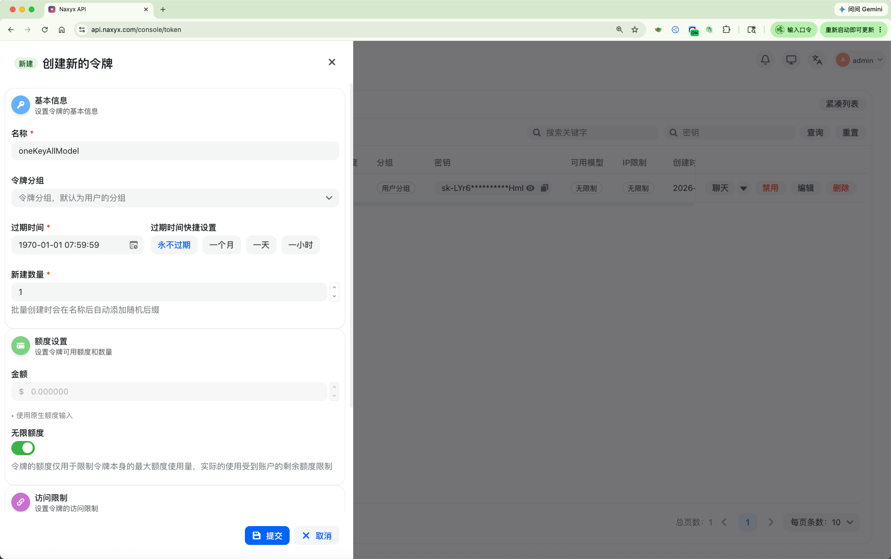
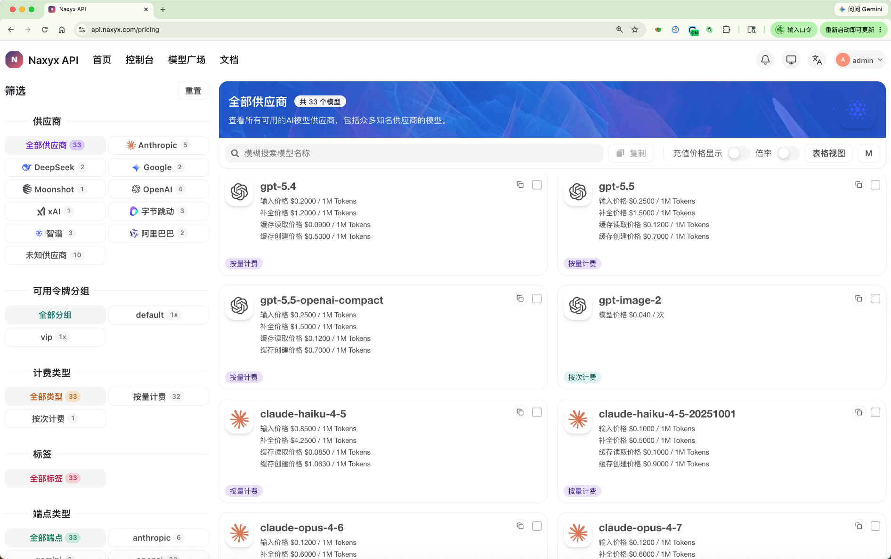

Naxyx API 配置大全
我们大约持有价值100万人民币的显卡，算力充沛，稳定。
小白请勿购买token，请看清楚文档再购买
快速开始
第一步：注册账号 + 获取密钥
- 访问 Naxyx API，注册/登录账号 https://api.naxyx.com
- 进入「令牌管理」→「创建令牌」：一个apikey，接入所有大模型
- 复制生成的
sk-xxx密钥，下一步配置客户端要用
第二步：记住你的 API 信息
| 配置项 | 值 |
|---|---|
| API BaseURL | https://api.naxyx.com |
| API Key | sk-xxx（你创建的令牌） |

可用模型
价格综合下来，国产模型6至8毛人民币=100万token，不限速，不排队；GPT、Claude系列模型，一手资源、价格极低，gpt-5.5纯血版100%无掺假非常丝滑可接入CodeX
| 模型 | 模型 ID | 说明 |
|---|---|---|
| Claude | claude-opus-4-7claude-opus-4-6claude-sonnet-4-6 |
Anthropic Claude系列最新模型 |
| MiniMax-M2.7-highspeed | MiniMax-M2.7-highspeed |
均衡性价比，响应速度极快，主推 |
| Doubao-seed-2.0-code | ark-code-latest |
豆包Seed Code编程模型最新版 |
| DeepSeek-v4-pro | deepseek-v4-pro |
DeepSeek V4 Pro最新版，极速稳定，不排队，主推 |
| GPT-5.5 | gpt-5.5gpt-5.4gpt-image-2 |
OpenAI 最新模型，一手资源，性价比极高，主推 |
| Qwen3.6 | Qwen3.6-35B-A3B |
阿里通义千问3.6最新模型，极速稳定、均衡，多模态、可识别图片 |
| Grok-4.3 | grok-4.3 |
SpaceXAI系列最新模型 |
| Gemini-3 | gemini-3.5-flashgemini-3.1-pro-preview |
Google Gemini系列最新模型 |
支持试用
1元RMB，试用10美金额度

一、Claude Code 配置教程
Claude Code 使用 Anthropic 协议，配置方式如下：
方法一：CC Switch 一键配置（推荐）
CC Switch 是 Claude Code 的懒人配置桌面工具：
- 下载地址：GitHub - cc-switch
- 打开 CC Switch → 输入 API 信息：
- 请求地址：
https://api.naxyx.com（不带/v1） - API Key：
sk-xxx - 模型：
claude-opus-4-6
- 请求地址：
- 点击「测试」→ 弹窗显示成功 → 点击「使用」
方法二：手动配置环境变量
在 Claude Code 的 settings 文件中添加：
{
"env": {
"ANTHROPIC_AUTH_TOKEN": "sk-xxx",
"ANTHROPIC_BASE_URL": "https://api.naxyx.com",
"ANTHROPIC_MODEL": "claude-opus-4-6"
}
}配置完成后重启 Claude Code 即可。
二、Cline / Kilo Code 插件配置教程
适用于 VS Code、Cursor 等编辑器中的 Cline 或 Kilo Code 插件。
- 打开插件设置
- API Provider 选择 OpenAI Compatible
- 填入以下信息：
- Base URL：
https://api.naxyx.com/v1 - API Key：
sk-xxx - Model ID：
claude-opus-4-6（或其他可用模型）
- Base URL：
- 保存即可使用
三、Cherry Studio 配置教程
Cherry Studio 下载地址：https://www.cherry-ai.com/
- 打开 Cherry Studio → 设置 → 模型服务商
- 添加自定义服务商：
- 类型：OpenAI Compatible
- API 地址：
https://api.naxyx.com/v1 - API Key：
sk-xxx
- 添加模型 → 输入模型 ID（如
claude-opus-4-6） - 保存后即可在对话中选择使用
四、Codex CLI 配置教程
如果你需要使用 OpenAI Codex CLI 配合 GPT-5.5 模型：
4.1 安装 Codex CLI
npm i -g @openai/codex4.2 配置文件
编辑 ~/.codex/config.toml（Mac/Linux）或 C:\Users\你的用户名\.codex\config.toml（Windows）：
model = "gpt-5.5"
model_provider = "naxyx"
[model_providers.naxyx]
name = "naxyx"
base_url = "https://api.naxyx.com"
wire_api = "responses"
requires_openai_auth = true编辑 ~/.codex/auth.json：
{
"OPENAI_API_KEY": "sk-xxx"
}4.3 启动
codex --yolo五、OpenClaw（小龙虾）配置教程
编辑配置文件 ~/.openclaw/openclaw.json，在 models 部分添加：
{
"models": {
"providers": {
"naxyx": {
"baseUrl": "https://api.naxyx.com/v1",
"apiKey": "sk-xxx",
"api": "anthropic-messages",
"models": [
{
"id": "claude-opus-4-6",
"name": "Claude Opus 4.6",
"reasoning": true,
"contextWindow": 200000,
"maxTokens": 128000
}
]
}
}
},
"agents": {
"defaults": {
"model": {
"primary": "naxyx/claude-opus-4-6"
}
}
}
}保存后 Gateway 自动生效。验证：openclaw models status
六、酒馆 SillyTavern 配置教程
- 打开酒馆 → 设置 → API 连接
- 选择 Chat Completion → OpenAI Compatible
- 填入：
- Base URL：
https://api.naxyx.com/v1 - API Key：
sk-xxx - Model：手动输入
claude-opus-4-6
- Base URL：
- 点击连接测试
七、代码中直接调用
Python（OpenAI SDK）
from openai import OpenAI
client = OpenAI(
api_key="sk-xxx",
base_url="https://api.naxyx.com/v1"
)
response = client.chat.completions.create(
model="claude-opus-4-6",
messages=[{"role": "user", "content": "你好"}]
)
print(response.choices[0].message.content)cURL
curl https://api.naxyx.com/v1/chat/completions \
-H "Content-Type": "application/json" \
-H "Authorization": "Bearer sk-xxx" \
-d '{
"model": "claude-opus-4-6",
"messages": [{"role": "user", "content": "你好"}]
}'常见问题
Q：连接失败怎么办？
- 检查密钥是否完整复制（
sk-xxx格式） - 确认网络能访问 https://api.naxyx.com
- 部分工具 URL 需要带
/v1，部分不需要，请注意区分
Q：报 429 错误？
说明上游 API 达到速率限制，请稍后重试或联系管理员扩容渠道。
Q：Claude Code 和 Cline 的 URL 有什么区别？
| 客户端 | URL |
|---|---|
| Claude Code | https://api.naxyx.com（不带 /v1） |
| Cline / Kilo Code / Cherry Studio / 酒馆 | https://api.naxyx.com/v1（带 /v1） |
Q：支持 streaming 流式输出吗？
支持。所有客户端默认使用流式输出，体验流畅。